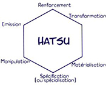

L'Énergie vitale communément appelé : Le Nen.
Nen (念, Force de l'esprit) est l'une des caractéristiques déterminantes du manga Hunter × Hunter par Yoshihiro Togashi. C'est une technique qui permet à un être vivant à utiliser et manipuler leur propre énergie de vie (connue sous le nom d'aura). Le mot "Nen" peut également être utilisé dans la conversation pour faire référence à l'aura.
Les 4 principes fondamentaux du Nen sont :
Ten
Ten(点, Point): Focus de l'esprit, réfléchir sur soi-même et déterminer l'objectif.
Une fois maintenu, il crée une enveloppe autour de l'utilisateur qui est semblable à la position dans un liquide tiède et visqueux. Ayant un linceul d'aura entourant le corps est la défense la plus élémentaire contre les attaques émotionnelles des autres utilisateurs de Nen toutefois, il ne peut pas se défendre contre les attaques physiques de Nen Le Ten maintient la vigueur juvénile et réduit le vieillissement.
Zetsu
Zetsu (舌, Langue): Mettre en mots.
le Zetsu permet à un utilisateur d'empêcher l'aura de fuir loin de leur corps, arrêtant l'écoulement de l'aura de leur corps tout en fermant l'ensemble ses pores de l'aura, l'utilisateur est en mesure d'arrêter la quasi-totalité la sortie de son aura comme l'eau d'un robinet. Comme l'utilisateur n'est plus entouré par son aura,elle est plus sensible à l'aura des autres. Cela peut être utile lors du suivi de l'autre personne et il saura également empêcher les autres utilisateurs de Nen de le remarquer.
Ren
Ren (錬, Caractère): Intensifier votre volonté.
Le Ren se concentre sur la sortie d'une grande quantité d'aura et de le garder sur le corps et l'expansion de la taille et de l'intensité de celui-ci. Si le Ten est considéré comme purement défensive, alors le Ren est typiquement ce qui est utilisé pour l'acte. Cela augmente la force et la durabilité physique de l'utilisateur et fournit une grande piscine d'aura pour toutes les techniques de pointe ou les compétences individuelles qu'ils décident d'utiliser.
Hatsu
Hatsu (発, sortie): Mettre l'action .
En essence, l'Hatsu est son expression personnelle du Nen qui crée une capacité paranormal spécial et unique (familièrement appelé une capacité Nen) Un bon Hatsu devrait refléter le propre caractère d'une personne.; on ne peut jamais vraiment maîtriser le Nen si elles ne copient que les capacités des autres.
- 
- -Si le volume de l'eau change,
l'utilisateur est du Renforcement. - -Si le goût de l'eau change,
l'utilisateur est de la Transformation. - -Si des impuretés apparaissent dans l'eau,
l'utilisateur est de la Matérialisation. - -Si la couleur de l'eau change,
l'utilisateur est de l'émission. - -Si la feuille se déplace sur la surface de l'eau,
l'utilisateur est de la Manipulation. - -Si un changement complètement différent apparaît,
l'utilisateur est de la Spécialisation.